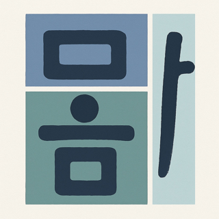

몸 + 마음 = 뫔
몸과 마음을
몸과 마음을
함께 돌보는 움직임
뫔건강연구소는 건강 돌봄이 더 필요한 분들을 위해, 몸의 움직임과 마음챙김을 하나로 잇는 움직임 명상 프로그램을 개발하고 연구합니다.

연구 관심 분야
우리가 하는 일
건강 취약군
건강 돌봄에서 소외되기 쉬운 분들 [예: 고령자, 만성질환자]
움직임 명상
몸의 움직임과 명상을 결합한 중재 개발
몸과 마음의 건강
[주요 건강 지표: 예) 스트레스, 우울, 통증]
효과 검증
대상자 맞춤 프로그램의 효과를 과학적으로 확인합니다